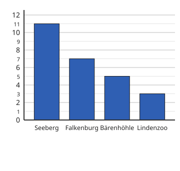

Tabelle, Diagramm, Text
Mit einem KI-Tutor lernen
Ein KI-Tutor erklärt dir diese Seite und hilft dir bei den Aufgaben. Wähl deinen Assistenten:
Mit Claude öffnen Mit ChatGPT öffnen Mit Mistral Vibe öffnen
Du nutzt dein eigenes Konto beim Anbieter. Der Assistent ist kein Angebot von lernapps.net: lernapps liefert nur Inhalte und Aufgaben. Die Wahl gilt für alle Seiten, nur auf diesem Gerät.
Wie hat die 6b gewählt?
Wie kam die 6b auf den Seeberg? Vorher hat sie abgestimmt. Alle 26 Kinder hatten eine Stimme. Selin hat an der Tafel für jede Stimme einen Strich gemacht, immer fünf zusammen.
Auf der Seite davor hast du Daten in einer Tabelle gedeutet. Auf dieser Seite zeigst du dieselben Daten auf verschiedene Arten und wählst die Form, die eine Frage am schnellsten beantwortet.
Seeberg ||||| ||||| |
Falkenburg ||||| ||
Bärenhöhle |||||
Lindenzoo |||
Aufgabe
Lösung
Richtige Antwort: 7
Ein voller Block hat 5 Striche, dazu kommen 2 einzelne. 5 + 2 = 7.
Dieselben Daten, drei Formen
Jona schreibt die Stimmen in eine Tabelle. Mia malt ein Säulendiagramm. Selin schreibt einen Satz für die Eltern. Alle drei zeigen dieselben Daten.
| Ziel | Stimmen |
|---|---|
| Seeberg | 11 |
| Falkenburg | 7 |
| Bärenhöhle | 5 |
| Lindenzoo | 3 |

© CC-BY-4.0Mias Säulendiagramm. Je höher die Säule, desto mehr Stimmen. Die Skala links zeigt die Zahl der Stimmen.
Selins Satz: „Der Seeberg hat die meisten Stimmen bekommen, 11 von 26. Darum fahren wir dorthin.“
Merke
Keine Form ist immer die beste. Die Tabelle zeigt genaue Zahlen. Das Säulendiagramm zeigt auf einen Blick, was größer ist. Ein Text erklärt, was die Daten bedeuten. Wähle die Form, die deine Frage am schnellsten beantwortet.
Übung
Aufgabe
Lösung
Richtige Antwort: 8
Die Säule der Bärenhöhle reicht bis 5, die des Lindenzoos bis 3. 5 + 3 = 8.
Aufgabe
Lösung
Richtige Antwort: Welches Ziel liegt vorn? Ich will es auf einen Blick sehen. – Säulendiagramm; Wie viele Stimmen hat die Bärenhöhle genau? – Tabelle; Die Eltern wollen wissen, wohin die Fahrt geht und warum. – Text
Das Diagramm zeigt den Vergleich, die Tabelle die genaue Zahl, der Text die Bedeutung.
Aufgabe
Lösung
Richtige Antwort: 1. Seeberg, 2. Falkenburg, 3. Bärenhöhle, 4. Lindenzoo
11, 7, 5 und 3 Stimmen. Im Säulendiagramm siehst du die Reihenfolge an der Höhe der Säulen.
Aufgabe
Lösung
Richtige Antwort: Die Aussage stimmt nicht.
Für genaue Zahlen ist eine Tabelle besser, für eine Erklärung ein Text. Es kommt auf die Frage an.
Jetzt kannst du dieselben Daten als Tabelle, Diagramm und Text zeigen. Am Seeberg muss Frau Berg die Zimmer einteilen. Dafür lernst du auf der nächsten Seite noch eine Form kennen, den Baum.
Fehler gefunden oder eine Idee für diese App?